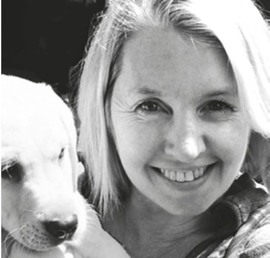

Royal Ascot × Tisserand
Limited edition range for Royal Ascot inspired by the colourful racing silks as the horses flash by.
- Concept
- Label design
- Illustration
Creative Director, Consultant, Designer, Illustrator. Animal lover, salsa dancer, mother of two.
More than 25 years of brand strategy, brand identity and packaging design, with a speciality in wine and spirits, for retailers, independent producers and global brands.



"I have 25+ years experience in Brand Strategy, Brand Identity, Packaging and much more." Most recently Sarah specialised in wine and spirits design as Creative Director of Barlow & Co.
"I have been fortunate enough to spend most of my career designing on an almost daily basis so I would class myself as prolific. I'm not ready to hang up my pencil but I am open to roles in which I can advise strategically, mentor and direct the design process in an innovative, effective and agile way. I especially enjoy mentoring young designers."
"For over 10 years I have founded and led several local projects committed to improving our community in West London. I believe passionately in giving back to the community."
Characters, colour and craft for things people pick up.
Limited edition range for Royal Ascot inspired by the colourful racing silks as the horses flash by.
Celebrating our love of dogs by bringing Honey the Dog to life.
Divinely different Italian gelato dessert comes to the UK.
Bringing to life a new brand of mini ice cream parlour machines.
The Drinks Trust is a charity dedicated to the drinks and hospitality workforce. Our water brand supported their work.
Re-styling Superdrug's range of cosmetics.
Winemakers with a story, and the labels that tell it.
Proudly introducing innovation to the UK. Now the UK's number 1 alcohol free wine.
Medieval Bruton, Somerset made new. By Durslade Vineyard and the people behind the art world of Hauser & Wirth. Created at Barlow & Co for the very first wine from Durslade Farm Vineyard.
The vineyard sits on the site of an ancient Roman vine terrace where a Roman coin was found, inscribed with a woman holding a cornucopia of grapes. The label is a medieval interpretation of that maid, treading and eating grapes with a mischievous look in her eye.
Bringing to life the embodiment of a South African winery through illustration and augmented reality.
Creating a brand that is all about being the perfect partner for great food.
Successfully bringing Croatian wine to the UK with great style and storytelling.
Showing the world the beauty of English winemaking next to the Ashdown Forest.
Champagne house Pol Roger makes a bold venture into UK canned wines.
Blending history and modernity in Burgundy.
Historic Chilean wine brand gets a refresh.
Here are some other lovely wine labels I have had the pleasure and privilege to design.
Own label ranges for Marks & Spencer, Tesco, The Wine Society and Spar.
The M&S Found range set the stage for the idea and look of wine discovery ranges in retail.
M&S upping the game in its premium wine offering.
Redeveloping Tesco's core range of wines. Creating their new look and brand identities.
Tesco Finest range of 80+ wines. Telling stories of place and producer.
A new look for one of Tesco's most popular wine brands.
Refreshing the Wine Society's own brand range.
Creating the Generation Series using a 'Vineline' to depict The Wine Society's 150-year history.
Spar's varietal range takes inspiration from letterpress type.
Gin, whisky and snaps.
Rebranding of Warner Edwards led to triple digit growth.
Radical repositioning of a niche scotch whisky into an LVMH luxury brand.
Limited edition numbered screenprints for Johnnie Walker's exclusive Directors Blend.
Snaps & Rye introduce interesting flavoured snaps liqueur to the UK.
Brands people meet in airports, high streets and racecourses.
Engaging narrative and informal logo was designed to connect to passengers on a personal level.
Beloved French retailer gets a refresh and a new engaging icon.
Redesigning a 250 year old company at the heart of British horse racing. The previous logo was based on a Stubbs oil painting.
A history in art and maps.
The Timeline is created from 16 enormous maps of the area, dating from 1592 to today, overlaid with works of art by renowned artists showing local landmarks. This includes two specially commissioned artworks by Sir Peter Blake and Jan Pienkowski.
The legacy of the mural includes the upgrade to the surrounding area, the creation of a local artist's trail and writer's trail, educational tours and even council right-of-way decisions. "I love to bring history to a new audience through design."
Sarah is the co-founder and was co-director of Abundance London from 2010 to 2020. Based in Chiswick, West London, it began by harvesting surplus fruit and planting orchards, gardens and hedgerows, and went on to create beautiful spaces through planting and through art. That work included The Chiswick Timeline, of which Sarah is immensely proud.
"Instead of making sourdough during lockdown I decided to do animal portrait collages made from cut and torn paper."
The portraits are all hand made using only cut paper, and can include personalised memorabilia within them. Sarah is open to commissions: see cruzandcruz.co.uk or get in touch.
A campaign concept for Butternut Box.
A creative task set while interviewing for the in-house role of Head of Creative at Butternut Box. Sarah spent a day on it. The insight: fresh dog food smells as good as it tastes, yet no one was communicating smell until the box arrived. This is interview work, not a commissioned campaign.
"Strong brand insight: Sarah's focus on the sensory aspect of smell as a key differentiator for Butternut Box is both creative and insightful."
Feedback from Butternut Box
For creative direction, design consultancy, mentoring or a cut paper portrait commission, find Sarah on LinkedIn or through Cruz & Cruz.